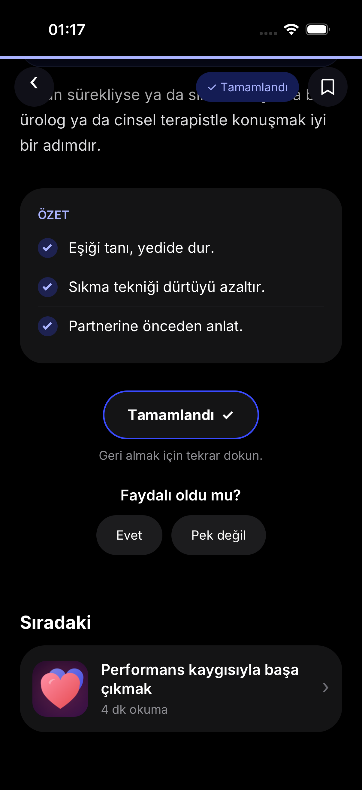

Bloom · Library & Article Experience
Phase 11.4.1 · 12–13 Ekim 2026 · iPhone 17 Pro / iOS 26.3. HTML panelleri supplied kaynak fonksiyonları/CSS ile çevrimdışı render edilmiştir. Belge renderer'ı SVG currentColor, grid, glow/blur ve inset shadow'u tam eşlemez; browser pixel golden değildir. Native farklılıkları ve test kanıtları QA raporundadır.
Yazının başı · native bookmark kayıtlı
Sona kaydırmak tamamlamaz
Native durumlar ve regresyonlar
Final review · 13 Ekim 2026
Önceki görüntüler korunmuştur. Yeni reader status safe-area opaktır; kaynak 64 pt fade altında devam eder. Pratik kartı açık unavailable durumudur. Kegel CTA gerçek deneyime gider, exercise başlatılmaz.
 Önce · önceki reader status fade (tarihsel kare)
Önce · önceki reader status fade (tarihsel kare)
Sonra · sistem yazısının altında içerik yok; fade devam ederFinal review veri koruma kontrolü